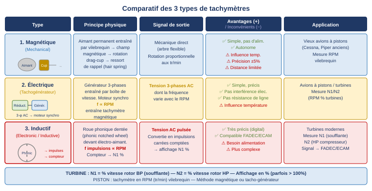
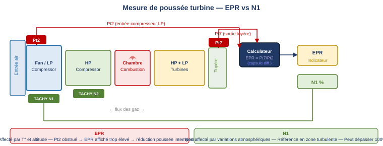
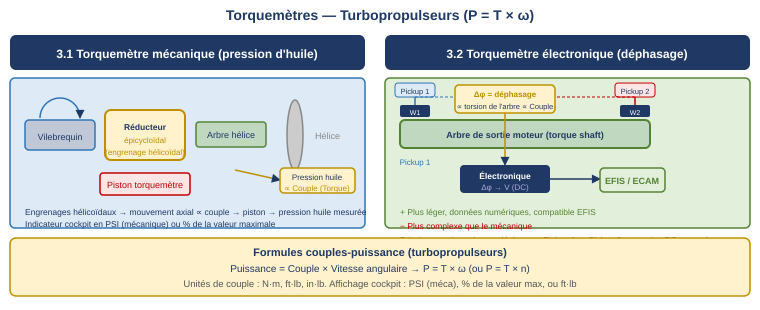
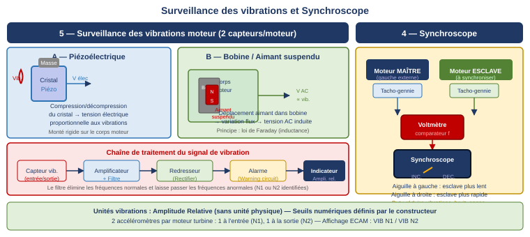

1. Tachymètre (Tachometer)
Le tachymètre mesure la vitesse de rotation du moteur et permet au pilote de surveiller la puissance et de maintenir le moteur dans ses limites certifiées. La grandeur mesurée diffère selon le type de motorisation :
- Moteur à pistons : vitesse du vilebrequin en RPM (tours par minute) ;
- Turbomoteur : vitesse des compresseurs exprimée en pourcentage d'une vitesse de référence (N1 %, N2 %).
Il existe trois technologies de mesure de la vitesse de rotation :

1.1 Tachymètre magnétique (mécanique)
Le tachymètre magnétique est la solution la plus ancienne, réservée aux vieux avions à pistons. Un arbre flexible relie le vilebrequin à l'instrument de tableau de bord. À l'intérieur de l'instrument, un aimant permanent entraîné par l'arbre tourne à l'intérieur d'une drag-cup non magnétique. Le champ magnétique rotatif induit des courants de Foucault dans la drag-cup, qui entraînent sa rotation. Un ressort de rappel (hair spring) compense la rotation, de sorte que l'angle d'équilibre de la cup est proportionnel au RPM.
1.2 Tachymètre électrique (tacho-générateur)
Le tacho-générateur est un alternateur 3-phases entraîné par la boîte de vitesse moteur. Le signal produit est une tension triphasée dont la fréquence est proportionnelle au RPM. Cette tension alimente un moteur synchrone à distance, dont la vitesse de rotation est exactement la même que celle du générateur. Ce moteur synchrone entraîne à son tour un tachymètre magnétique classique (aimant + drag-cup + ressort).
La fréquence du signal 3-phases est directement proportionnelle à la vitesse de rotation. Le moteur synchrone côté indicateur tourne exactement à la même vitesse que le générateur côté moteur.
1.3 Tachymètre électronique à sonde inductive
Le système inductif utilise une roue phonique dentée (phonic notched wheel) montée sur l'arbre du moteur, en regard d'un capteur électromagnétique. Lorsque les dents de la roue passent devant le capteur, le flux magnétique varie, générant une impulsion électrique à chaque dent. Un compteur électronique mesure la fréquence de ces impulsions et l'affiche en N1 %.
Sur les turbines à soufflante, les pales du fan elles-mêmes peuvent jouer le rôle de la roue dentée, le capteur détectant le passage de chaque pale.
2. Mesure de la poussée turbine — EPR vs N1
Sur un turboréacteur, la poussée est gérée selon deux paramètres alternatifs : l'EPR ou le N1, selon la version du moteur et les procédures de l'opérateur.

2.1 EPR — Engine Pressure Ratio
L'EPR est le rapport entre la pression totale en sortie de tuyère (Pt7) et la pression totale à l'entrée du compresseur LP (Pt2). C'est un indicateur de performance aérothermodynamique du moteur.
Pt7 = pression totale sortie tuyère (turbine outlet) · Pt2 = pression totale entrée compresseur LP. L'EPR est sans unité, toujours > 1 en poussée. Valeur TOGA typique : 1,4–1,6.
L'EPR est affecté par la température et l'altitude. À EPR constant, si la OAT varie, la poussée reste constante (auto-compensée). C'est son avantage : il donne une mesure directe de la performance thermodynamique.
2.2 N1 — Vitesse du rotor basse pression
Le N1 est la vitesse de rotation du rotor basse pression (LP shaft), qui comprend la soufflante (fan) et le compresseur BP. Il est exprimé en pourcentage d'une vitesse de référence. Le N1 est le paramètre principal de réglage de poussée sur la majorité des turbines modernes (CFM56, LEAP, Trent…).
Avantages du N1 par rapport à l'EPR :
- Non affecté par les variations atmosphériques (température, altitude) — plus stable que l'EPR ;
- Déterminé par l'angle de la manette, l'altitude et la température totale d'entrée ;
- En zone de turbulences, N1 est utilisé comme référence même si l'EPR est disponible (les fluctuations de pression dynamique fausseraient l'EPR) ;
- La valeur maximale peut dépasser 100 % (valeur de certification en sur-régime transitoire) ;
- En montée continue, le calculateur de poussée moderne ajuste automatiquement N1 à mesure que l'avion monte.
3. Couple-mètre moteur (Torquemeter)
Les turbopropulseurs transmettent leur puissance à l'hélice via un arbre de sortie. Contrairement aux turboréacteurs, ils produisent essentiellement un couple (moment de rotation) plutôt qu'une poussée directe par réaction des gaz.
P = puissance (Watts ou HP) · T = couple (N·m, ft·lb, in·lb) · ω = vitesse angulaire (rad/s). Le tachymètre donne ω, le couple-mètre donne T, les deux ensemble déterminent la puissance.
Le couple est le moment de force produit par l'hélice autour de l'axe de l'arbre de sortie. Il peut être déterminé en mesurant la torsion d'un arbre de longueur connue. Son affichage en cockpit peut être en PSI (couple-mètre mécanique), ft·lb ou en pourcentage de la valeur maximale.

3.1 Couple-mètre mécanique
Le couple-mètre mécanique est intégré dans le réducteur épicycloïdal entre l'arbre moteur et l'arbre hélice. Des engrenages hélicoïdaux génèrent un mouvement axial proportionnel au couple transmis. Ce mouvement axial agit sur un piston hydraulique qui crée une pression d'huile proportionnelle au couple. Cette pression est mesurée par un manomètre (Bourdon) et envoyée à l'indicateur cockpit.
3.2 Couple-mètre électronique
Le couple-mètre électronique utilise deux roues dentées fixées sur l'arbre de sortie à deux positions différentes. Sous l'effet du couple, l'arbre se tord légèrement : les deux roues se décalent angulairement l'une par rapport à l'autre. Ce déphasage angulaire (phase shift) est mesuré par deux capteurs inductifs (Pickup 1 et Pickup 2). Un circuit électronique convertit ce déphasage en une tension DC proportionnelle au couple, envoyée à l'EFIS/ECAM.
4. Synchroscope
Sur les avions multi-moteurs (notamment à pistons ou turbopropulseurs), il est essentiel que tous les moteurs tournent à la même vitesse pour minimiser les vibrations structurelles, le bruit en cabine et la consommation de carburant. Le synchroscope facilite la synchronisation manuelle des régimes.
Le synchroscope fonctionne sur le principe d'un voltmètre alimenté par deux tacho-génies. Il compare les fréquences des alternateurs des différents moteurs. Un moteur est désigné comme moteur maître (habituellement le moteur gauche extérieur, numéro 1), les autres sont les moteurs esclaves. L'instrument indique clairement si un moteur esclave est plus rapide ou plus lent que le maître, permettant au pilote d'ajuster la manette de gaz en conséquence.
5. Surveillance des vibrations moteur
Le but d'un système de surveillance des vibrations est de détecter tout déséquilibre rotor ou défaillance avant qu'il n'entraîne une panne moteur. Tout changement de niveau de vibration est révélateur d'un endommagement potentiel. Des alertes cockpit sont déclenchées si les seuils sont dépassés.

5.1 Accéléromètre piézoélectrique
Un cristal piézoélectrique est monté rigidement sur le corps du moteur avec une masse en contact. Les vibrations compriment et décompriment alternativement le cristal, qui génère une tension électrique par effet piézoélectrique, proportionnelle aux accélérations. Ce signal est envoyé à la chaîne de traitement.
5.2 Accéléromètre à bobine et aimant suspendu
Le corps du capteur est boulonné au moteur. À l'intérieur, un aimant est suspendu élastiquement dans une bobine fixe. Lorsque le moteur vibre, le corps du capteur suit les vibrations, mais l'aimant reste quasi-immobile par inertie (suspendu). Le mouvement relatif de l'aimant dans la bobine génère une tension AC par induction électromagnétique (loi de Faraday), proportionnelle aux vibrations.
5.3 Chaîne de traitement et affichage
Le signal brut du capteur est amplifié, puis filtré. Le filtre est l'élément clé : il supprime les fréquences normales au fonctionnement du moteur et ne laisse passer que les fréquences potentiellement dangereuses. Le signal filtré est redressé et envoyé au circuit d'alarme et à l'indicateur cockpit.
Les vibrations sont mesurées et affichées en Amplitude Relative, sans unité physique spécifique — uniquement des seuils numériques définis par le constructeur. Sur chaque moteur turbine, deux accéléromètres sont utilisés : un à l'entrée (lié à N1) et un à la sortie (lié à N2). L'ECAM affiche VIB N1 et VIB N2.
6. Mesure du temps
Certains avions enregistrent et affichent l'utilisation des moteurs en vol (heures de fonctionnement) pour suivre l'état et la maintenance. Le compteur d'heures de vol peut être couplé à un capteur embarqué qui s'active à partir d'une certaine vitesse (typiquement à l'envol).
L'horloge de bord fournit une référence temporelle pour plusieurs systèmes :
- l'ACARS (Aircraft Communications Addressing and Reporting System) — messages et comptes-rendus automatiques ;
- la maintenance moteur et systèmes ;
- les systèmes de navigation (FMS, RNAV) ;
- les enregistreurs (FDR, CVR) — horodatage des événements.